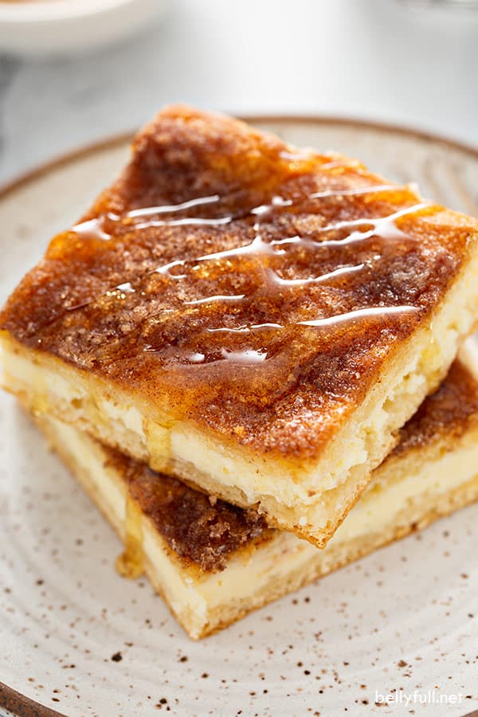

Sopapilla Cheesecake Pie

Description
The decadent sopapilla cheesecake recipe features a rich filling, an easy crescent roll crust, and a buttery cinnamon-laced topping that makes it impossible to resist. It is easy to make, smells great while cooking, and tastes wonderful!
Ingredients
- cooking spray
- 2 (8 ounce) packages cream cheese, softened
- 1 ¾ cups white sugar, divided
- 1 teaspoon Mexican vanilla extract
- 2 (8 ounce) cans refrigerated crescent rolls
- ½ cup butter, room temperature
- 1 teaspoon ground cinnamon
- ¼ cup honey
Steps
- Preheat the oven to 350 degrees F (175 degrees C). Grease a 9x13-inch baking dish with cooking spray.
- Beat cream cheese, 1 cup sugar, and vanilla extract in a bowl until smooth.
- Unroll crescent roll dough, and use a rolling pin to shape each sheet into a 9x13-inch rectangle. Press one piece into the bottom of the prepared baking dish. Evenly spread cream cheese mixture on top, then cover with remaining piece of crescent dough.
- Mash remaining 3/4 cup sugar, butter, and cinnamon with a fork until combined. Dot mixture over top of dough.
- Bake in the preheated oven until crescent dough has puffed and turned golden brown, about 30 minutes.
- Remove from the oven and drizzle with honey. Cool completely in the pan for about 2 hours before cutting into 12 squares.